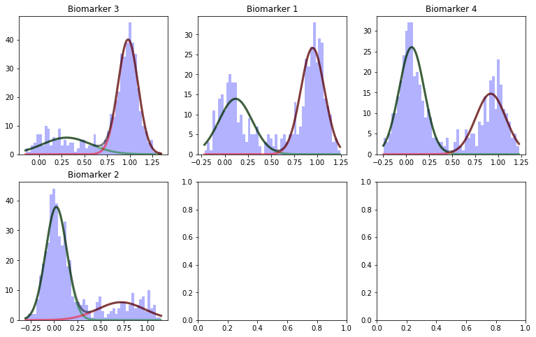

## Simulate data using sigmoids. Low values indicate healthy biomarkers. High values indicate abnormal biomarker values.
import numpy as np
from matplotlib import pyplot as plt
N = 4 # number of events/features
J = 500 # number of patients
noise_scale = 0.1
dp = np.linspace(0, 20, J)
def sigmoid(t,a=1,b=-10):
return 1/(1 + np.exp(-a*(t-b)))
gradients = np.array([1,1,1,1])
onsets = np.array([4,8,12,16])
X = np.empty(shape=(J,N))
fig,ax = plt.subplots(figsize=(10,5))
for a,b,k in zip(gradients,onsets,range(len(gradients))):
# print('a = %i, b = %i' % (a,b))
x = sigmoid(t=dp,a=a,b=b)
#print(x)
ax.plot(dp, x)
y = x + np.random.normal(0, noise_scale, x.size)
X[:,k] = y
ax.plot(dp, y,'.')
ax.set_xlabel("Disease Progression Time",fontsize=20)
ax.set_ylabel("sigmoid(t)",fontsize=20)
Text(0, 0.5, 'sigmoid(t)')

## define cases, controls, and subjects in the prodromal stage of disease
## For example: if the cases represent Alzheimer's disease (AD), mild cognitive impairment (MCI) is the prodromal stage of the disease
## dp is the simulated disease timeline (x-axis of the above plot)
import pandas as pd
idx_cases = dp >= 14
idx_controls = dp <= 7
idx_mci = np.logical_and(dp>7,dp<14)
## Prepare data for DEBM call.
D = pd.DataFrame()
# This sets the order in which different biomarkers become abnormal
# The set order is biomarker 3 -> followed by 1 --> followed by 4 --> followed by 2
D['Biomarker 3'] = X[:,0]
D['Biomarker 1'] = X[:,1]
D['Biomarker 4'] = X[:,2]
D['Biomarker 2'] = X[:,3]
D['Diagnosis'] = ''
D.loc[idx_cases,'Diagnosis'] = 'AD'
D.loc[idx_controls,'Diagnosis'] = 'CN'
D.loc[idx_mci,'Diagnosis'] = 'MCI'
D['PTID']=D.index
!pip install pyebm
from pyebm import debm
## Basic call
ModelOutput, SubjTrain, _ = debm.fit(D,Factors=[],Labels=['CN','MCI','AD'])
print([ModelOutput.BiomarkerList[x] for x in ModelOutput.MeanCentralOrdering])
## Note: The order printed here is the same as the ground truth ordering set obove. You can verify this by changing the order in which biomarkers becomes abnormal in the above cell.
Requirement already satisfied: pyebm in /usr/local/lib/python3.7/dist-packages (2.0.3)
Requirement already satisfied: seaborn in /usr/local/lib/python3.7/dist-packages (from pyebm) (0.11.1)
Requirement already satisfied: matplotlib in /usr/local/lib/python3.7/dist-packages (from pyebm) (3.2.2)
Requirement already satisfied: scipy in /usr/local/lib/python3.7/dist-packages (from pyebm) (1.4.1)
Requirement already satisfied: scikit-learn in /usr/local/lib/python3.7/dist-packages (from pyebm) (0.22.2.post1)
Requirement already satisfied: statsmodels in /usr/local/lib/python3.7/dist-packages (from pyebm) (0.10.2)
Requirement already satisfied: numpy in /usr/local/lib/python3.7/dist-packages (from pyebm) (1.19.5)
Requirement already satisfied: six in /usr/local/lib/python3.7/dist-packages (from pyebm) (1.15.0)
Requirement already satisfied: tqdm in /usr/local/lib/python3.7/dist-packages (from pyebm) (4.41.1)
Requirement already satisfied: requests in /usr/local/lib/python3.7/dist-packages (from pyebm) (2.23.0)
Requirement already satisfied: pandas in /usr/local/lib/python3.7/dist-packages (from pyebm) (1.1.5)
Requirement already satisfied: pyparsing!=2.0.4,!=2.1.2,!=2.1.6,>=2.0.1 in /usr/local/lib/python3.7/dist-packages (from matplotlib->pyebm) (2.4.7)
Requirement already satisfied: kiwisolver>=1.0.1 in /usr/local/lib/python3.7/dist-packages (from matplotlib->pyebm) (1.3.1)
Requirement already satisfied: python-dateutil>=2.1 in /usr/local/lib/python3.7/dist-packages (from matplotlib->pyebm) (2.8.1)
Requirement already satisfied: cycler>=0.10 in /usr/local/lib/python3.7/dist-packages (from matplotlib->pyebm) (0.10.0)
Requirement already satisfied: joblib>=0.11 in /usr/local/lib/python3.7/dist-packages (from scikit-learn->pyebm) (1.0.1)
Requirement already satisfied: patsy>=0.4.0 in /usr/local/lib/python3.7/dist-packages (from statsmodels->pyebm) (0.5.1)
Requirement already satisfied: idna<3,>=2.5 in /usr/local/lib/python3.7/dist-packages (from requests->pyebm) (2.10)
Requirement already satisfied: certifi>=2017.4.17 in /usr/local/lib/python3.7/dist-packages (from requests->pyebm) (2020.12.5)
Requirement already satisfied: chardet<4,>=3.0.2 in /usr/local/lib/python3.7/dist-packages (from requests->pyebm) (3.0.4)
Requirement already satisfied: urllib3!=1.25.0,!=1.25.1,<1.26,>=1.21.1 in /usr/local/lib/python3.7/dist-packages (from requests->pyebm) (1.24.3)
Requirement already satisfied: pytz>=2017.2 in /usr/local/lib/python3.7/dist-packages (from pandas->pyebm) (2018.9)
['Biomarker 3', 'Biomarker 1', 'Biomarker 4', 'Biomarker 2']
## If you want to view the outputs of the model in different stages you can use VerboseOptions
# In this example, you can view the output of Gaussian Mixture Model
from collections import namedtuple
VO = namedtuple('VerboseOptions','Distributions')
VO.Distributions = 1
ModelOutput, SubjTrain, _ = debm.fit(D,Factors=[],Labels=['CN','MCI','AD'], VerboseOptions=VO)

## Uncertainty estimates of the model can be computed by bootstrap resampling the input data. This can be controlled by MethodOptions
# Bootstrapping
MO = namedtuple('MethodOptions','Bootstrap')
MO.Bootstrap = 10 # Indicates 10 random iterations of bootstrap resampling
# Visual output of the ordering can be obtained by:
VO = namedtuple('VerboseOptions','Ordering')
VO.Ordering = 1
ModelOutput, SubjTrain, _ = debm.fit(D,Factors=[],Labels=['CN','MCI','AD'], VerboseOptions=VO, MethodOptions=MO)
## Note: On top of estimating the sequence in which biomarkers become abnormal, the method also estimates the relative temporal distance between the different biomarkers
[0][1][2][3][4][5][6][7][8][9]


## The model estimates are very certain because the simulated data is near perfect. Real data usually has measurement errors, low effect sizes etc. Here, you can simulate a more difficult data using noise_scale parameter and the gradients parameters (lower value indicates slower progressing biomarkers, which results in lower effect sizes).
import numpy as np
from matplotlib import pyplot as plt
N = 4 # number of events/features
J = 500 # number of patients
noise_scale = 0.5 # Increased this from 0.1
dp = np.linspace(0, 20, J)
def sigmoid(t,a=1,b=-10):
return 1/(1 + np.exp(-a*(t-b)))
gradients = np.array([0.75,0.75,0.75,0.75])
onsets = np.array([4,8,12,16])
X = np.empty(shape=(J,N))
fig,ax = plt.subplots(figsize=(10,5))
for a,b,k in zip(gradients,onsets,range(len(gradients))):
# print('a = %i, b = %i' % (a,b))
x = sigmoid(t=dp,a=a,b=b)
#print(x)
ax.plot(dp, x)
y = x + np.random.normal(0, noise_scale, x.size)
X[:,k] = y
ax.plot(dp, y,'.')
ax.set_xlabel("Disease Progression Time",fontsize=20)
ax.set_ylabel("sigmoid(t)",fontsize=20)
Text(0, 0.5, 'sigmoid(t)')
## define cases, controls, and subjects in the prodromal stage of disease
## For example: if the cases represent Alzheimer's disease (AD), mild cognitive impairment (MCI) is the prodromal stage of the disease
## dp is the simulated disease timeline (x-axis of the above plot)
import pandas as pd
idx_cases = dp >= 14
idx_controls = dp <= 7
idx_mci = np.logical_and(dp>7,dp<14)
## Prepare data for DEBM call.
D = pd.DataFrame()
# This sets the order in which different biomarkers become abnormal
# The set order is biomarker 3 -> followed by 1 --> followed by 4 --> followed by 2
D['Biomarker 3'] = X[:,0]
D['Biomarker 1'] = X[:,1]
D['Biomarker 4'] = X[:,2]
D['Biomarker 2'] = X[:,3]
D['Diagnosis'] = ''
D.loc[idx_cases,'Diagnosis'] = 'AD'
D.loc[idx_controls,'Diagnosis'] = 'CN'
D.loc[idx_mci,'Diagnosis'] = 'MCI'
D['PTID']=D.index
# Bootstrapping
MO = namedtuple('MethodOptions','Bootstrap')
MO.Bootstrap = 10 # Indicates 10 random iterations of bootstrap resampling
# Visual output of the ordering can be obtained by:
VO = namedtuple('VerboseOptions','Ordering')
VO.Ordering = 1
ModelOutput, SubjTrain, _ = debm.fit(D,Factors=[],Labels=['CN','MCI','AD'], VerboseOptions=VO, MethodOptions=MO)
## Note: With a more difficult simulated dataset, the uncertainties of the estimates can be more easily seen.
[0][1][2][3][4][5][6][7][8][9]


## In real data, the sequence of biomarkers in itself is not fully informative, because some biomarkers become abnormal at almost the same time, whereas some others become abnormal at substantially different times. In the simulated data this can be controlled by the variable "onsets".
import numpy as np
from matplotlib import pyplot as plt
N = 4 # number of events/features
J = 500 # number of patients
noise_scale = 0.2
dp = np.linspace(0, 20, J)
def sigmoid(t,a=1,b=-10):
return 1/(1 + np.exp(-a*(t-b)))
gradients = np.array([0.75,0.75,0.75,0.75])
onsets = np.array([4,5,13,15]) # earlier value [4,8,12,16]
X = np.empty(shape=(J,N))
fig,ax = plt.subplots(figsize=(10,5))
for a,b,k in zip(gradients,onsets,range(len(gradients))):
# print('a = %i, b = %i' % (a,b))
x = sigmoid(t=dp,a=a,b=b)
#print(x)
ax.plot(dp, x)
y = x + np.random.normal(0, noise_scale, x.size)
X[:,k] = y
ax.plot(dp, y,'.')
ax.set_xlabel("Disease Progression Time",fontsize=20)
ax.set_ylabel("sigmoid(t)",fontsize=20)
Text(0, 0.5, 'sigmoid(t)')
## define cases, controls, and subjects in the prodromal stage of disease
## For example: if the cases represent Alzheimer's disease (AD), mild cognitive impairment (MCI) is the prodromal stage of the disease
## dp is the simulated disease timeline (x-axis of the above plot)
import pandas as pd
idx_cases = dp >= 14
idx_controls = dp <= 7
idx_mci = np.logical_and(dp>7,dp<14)
## Prepare data for DEBM call.
D = pd.DataFrame()
# This sets the order in which different biomarkers become abnormal
# The set order is biomarker 3 -> followed by 1 --> followed by 4 --> followed by 2
D['Biomarker 3'] = X[:,0]
D['Biomarker 1'] = X[:,1]
D['Biomarker 4'] = X[:,2]
D['Biomarker 2'] = X[:,3]
D['Diagnosis'] = ''
D.loc[idx_cases,'Diagnosis'] = 'AD'
D.loc[idx_controls,'Diagnosis'] = 'CN'
D.loc[idx_mci,'Diagnosis'] = 'MCI'
D['PTID']=D.index
# Bootstrapping
MO = namedtuple('MethodOptions','Bootstrap')
MO.Bootstrap = 10 # Indicates 10 random iterations of bootstrap resampling
# Visual output of the ordering can be obtained by:
VO = namedtuple('VerboseOptions','Ordering')
VO.Ordering = 1
ModelOutput, SubjTrain, _ = debm.fit(D,Factors=[],Labels=['CN','MCI','AD'], VerboseOptions=VO, MethodOptions=MO)
## Note: Here, even though the ordering plot shows a similar ordering as the first dataset, the event-center plot shows how close the biomarker abnormality events are to each other.
[0][1][2][3][4][5][6][7][8][9]

## The outputs until now were for the entire datasets. Now we will look into patient specific outputs
## Patient Staging estimates the stages of different subjects along the disease timeline.
MO = namedtuple('MethodOptions','Bootstrap')
MO.Bootstrap = 0
VO = namedtuple('VerboseOptions','PatientStaging')
VO.PatientStaging = 1
ModelOutput, SubjTrain, _ = debm.fit(D,Factors=[],Labels=['CN','MCI','AD'], VerboseOptions=VO, MethodOptions=MO)
## Note: Unlike EBM, DEBM estimates patient stages between 0 and 1 (rather between 0 and the position of the last event-center), since it also considers relative positioning of events into account.
findfont: Font family ['sans-serif'] not found. Falling back to DejaVu Sans.
findfont: Font family ['sans-serif'] not found. Falling back to DejaVu Sans.
Estimated patient stages of subjects in training set
## All the computations until now were done on the training set. If you have a separate test / validation set, that can be included as input in the function call as well.
from sklearn import model_selection
DTrain, DTest = model_selection.train_test_split(D,test_size=0.2)
MO = namedtuple('MethodOptions','Bootstrap')
MO.Bootstrap = 0
VO = namedtuple('VerboseOptions','PatientStaging')
VO.PatientStaging = 1
ModelOutput, SubjTrain, _ = debm.fit(DTrain,Factors=[],Labels=['CN','MCI','AD'], VerboseOptions=VO, MethodOptions=MO, DataTest=DTest)
Estimated patient stages of subjects in training set
Estimated patient stages of subjects in test set
## In the simulated datasets, we could compare the estimated ordering to the ground-truth ordering to see how accurate our estimate was. This is not possible in real data. One of the ways for validating the model in real data is by using the accuracy of classification of patients into different diagnostic groups (for e.g. CN vs AD) using the DEBM model's patient stages.
## Here, we compute the AUC for CN vs AD classification, done in a cross-validated manner
from sklearn.model_selection import StratifiedKFold as SKF
from sklearn import metrics
MO = namedtuple('MethodOptions', 'Bootstrap')
MO.Bootstrap = 0;
VO = namedtuple('VerboseOptions', 'Distributions PatientStaging')
VO.PatientStaging = 0;
VO.Distributions = 0;
Y = D['Diagnosis'].copy();
Y[Y == 'CN'] = 0;
Y[Y == 'AD'] = 2;
Y[Y == 'MCI'] = 1;
skf = SKF(n_splits=10, shuffle=True, random_state=42)
print("Cross-Validation Iteration:")
stages = np.zeros(D.shape[0])+np.nan
count = -1
for train_index, test_index in skf.split(D, pd.to_numeric(Y.values)):
count = count + 1;
print([count],end=",",flush=True)
DTrain, DTest = D.iloc[train_index], D.iloc[test_index]
ModelOutput, SubjTrain, SubjTest = debm.fit(DTrain, Factors=[], Labels=['CN','MCI','AD'],MethodOptions=MO, VerboseOptions=VO, DataTest=DTest)
stages[test_index] = SubjTest[0]['Stages'].values
Yt = D['Diagnosis']
idx = Yt != 'MCI'
Yt = Yt[idx]
Yt[Yt == 'CN'] = 0
Yt[Yt == 'AD'] = 1
auc = metrics.roc_auc_score(pd.to_numeric(Yt.values), stages[idx])
print("\AUC of DEBM using 10-fold cross-validation = ", auc)
## Note: The AUC is very high because the simulated dataset is near ideal. You can try to change the following parameters in the simulation script and see how the auc gets affected: noise_scale, gradients, onsets
Cross-Validation Iteration:
[0],[1],[2],[3],[4],[5],[6],[7],[8],[9],\AUC of DEBM using 10-fold cross-validation = 0.9998857142857144